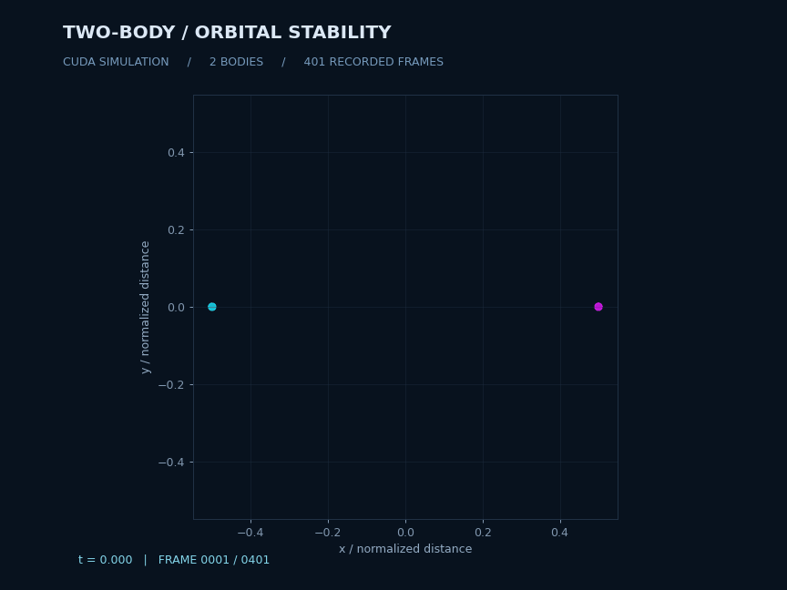
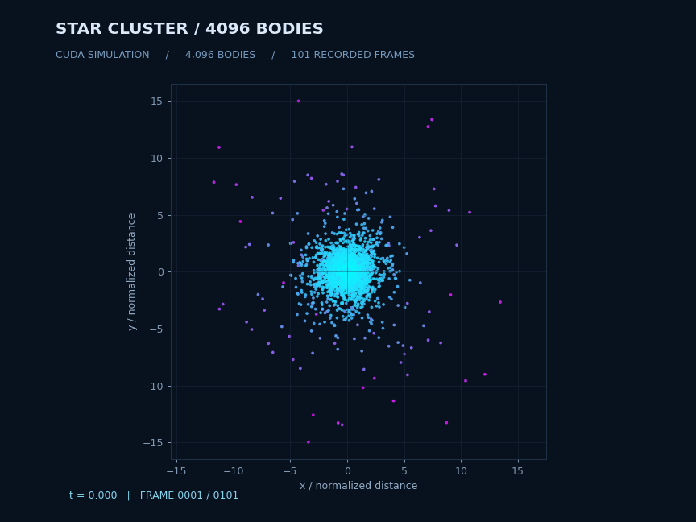
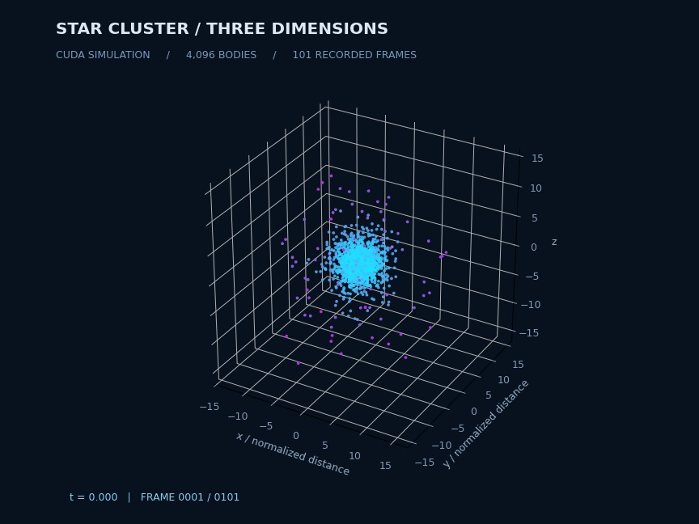
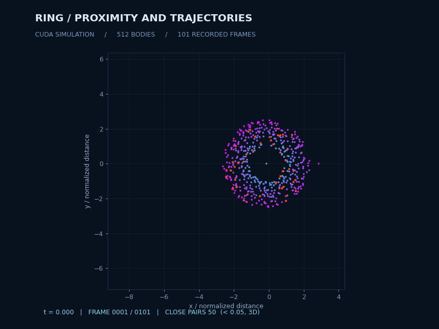
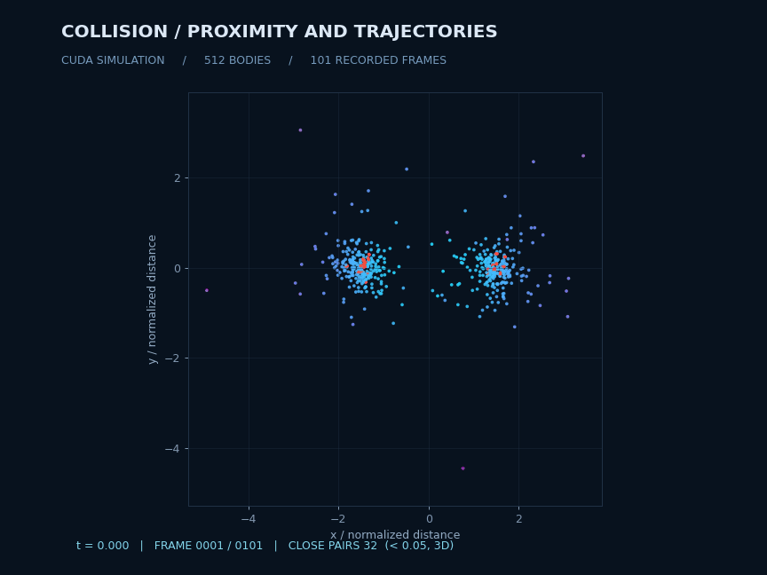

CUDA / 2026 SUMMER PROJECT / JIAYING
N 体引力模拟与可视化
WSL2 · RTX 4070 Laptop GPU · 4096 粒子 × 1000 步计算 0.256 秒 · 完整流程相对单线程 CPU 加速 65.5 倍
动画自动播放。使用说明 · 实验报告 · 实测数据

稳定的二体轨道
Leapfrog 积分；展示轨道和运动尾迹。模拟时间 20。

4096 粒子星团
直接计算全部引力相互作用，101 个轨迹记录点。

三维观察
与二维演示使用同一份二进制轨迹。

轨道扰动
中心星体、粒子环及较大扰动天体；红色标记当前近距离粒子。

近距离相遇
阈值 0.05，按三维真实距离统计所有粒子配对。标记仅描述离散时刻的接近程度，不模拟接触或合并。
65536 粒子 × 1000 步也已实际完成，计算约 13.986 秒。完整测试与工具环境限制均记录在实验报告中。